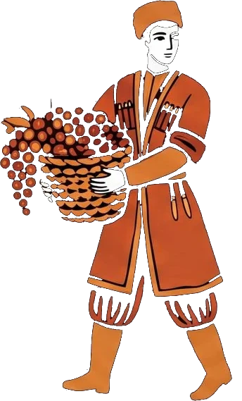
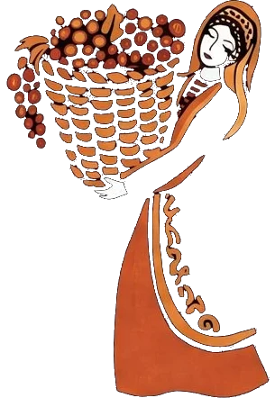
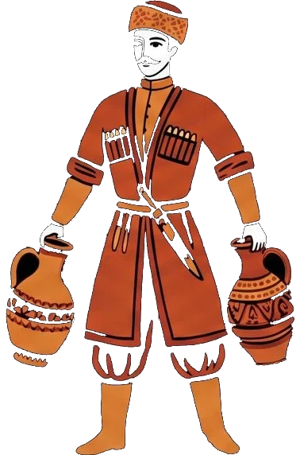
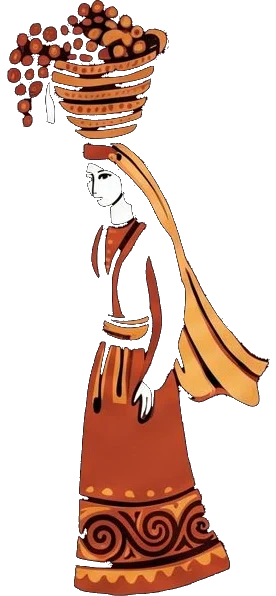
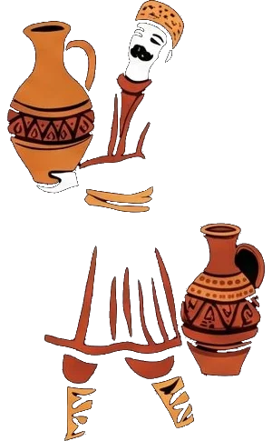
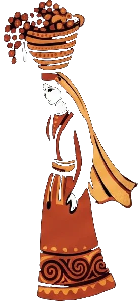
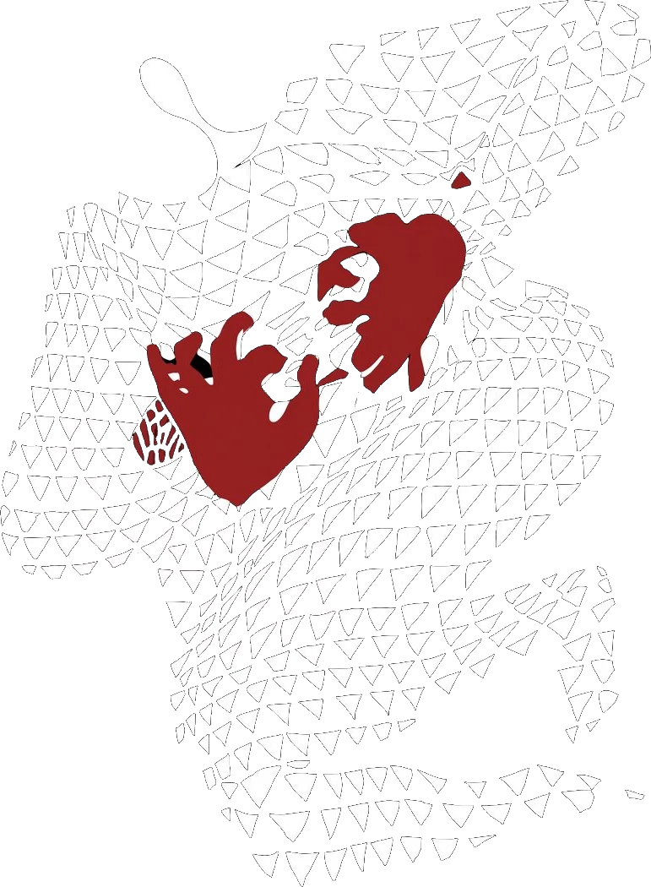
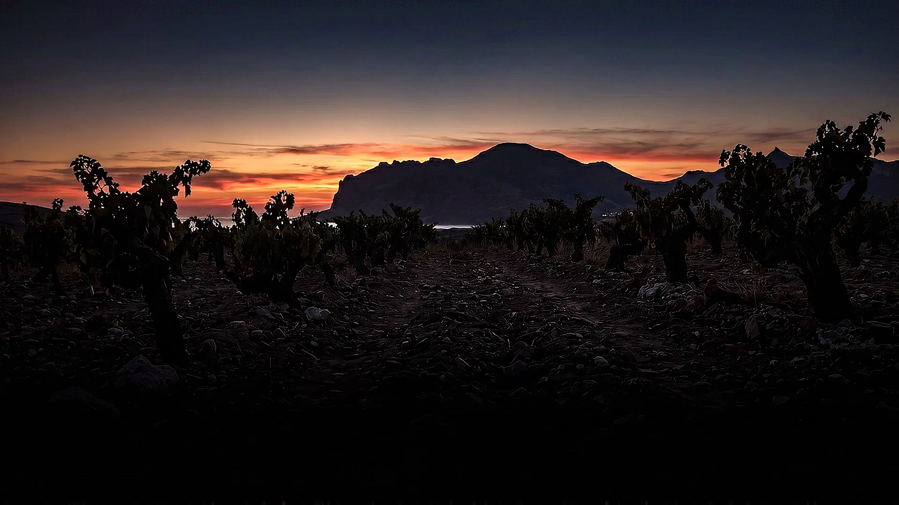

Токлук · урочище







Урочище Токлук · Судакская долина
Зверь этой главы — не с этикетки и не из легенды: мы дали дорогу орнаменту, придуманному для мира «Токлук». Он идёт по урочищу, где растут кефесия и саперави, а за ним — сбор: корзины, кувшины, песня. Листайте — процессия пройдёт через долину.
Листайте — процессия идёт
Линейка «Токлук»
Токлук — урочище между Судаком и Меганомом, где на сланцах растут кефесия и саперави. Шахматный зверь — не с бутылки и не из предания: это орнамент, придуманный для этой главы, и мы просто дали ему дорогу.

 Саперави — Кефесиясухое красное · 13% об.
Саперави — Кефесиясухое красное · 13% об.
Четыре мира наших этикеток